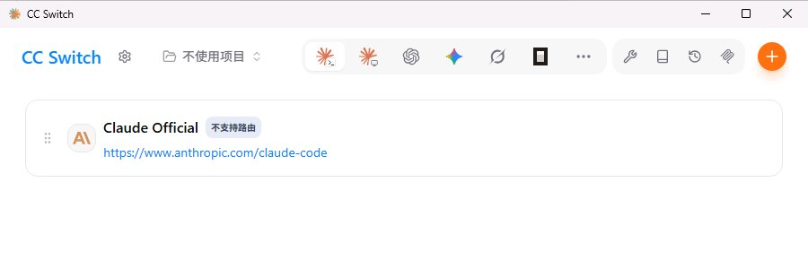
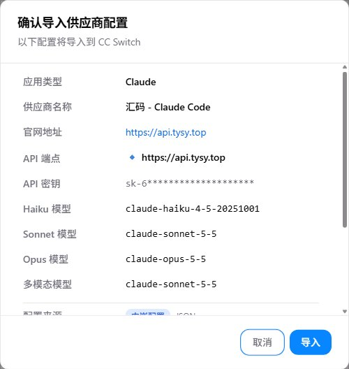
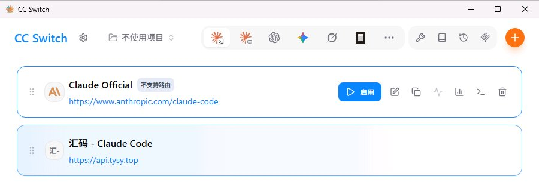
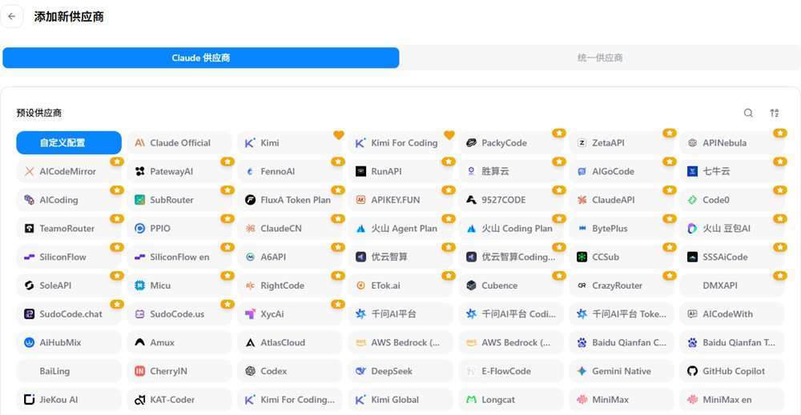
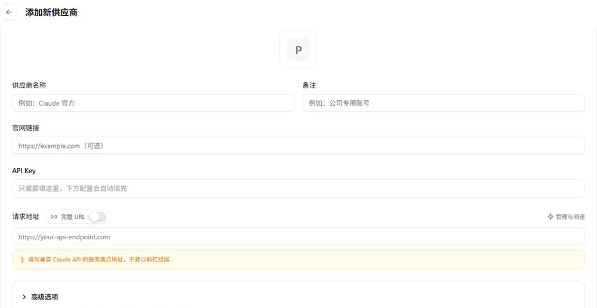
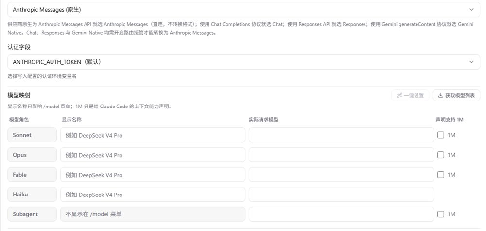
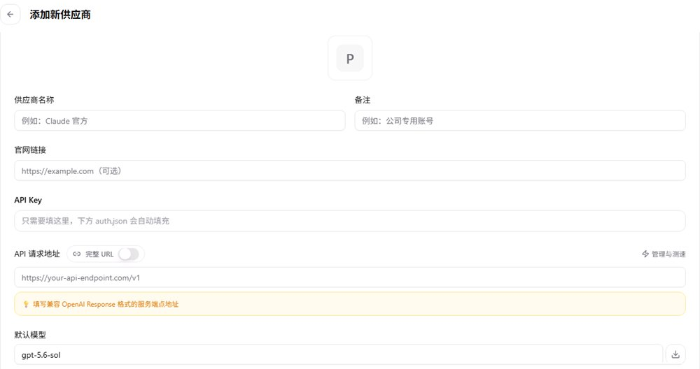
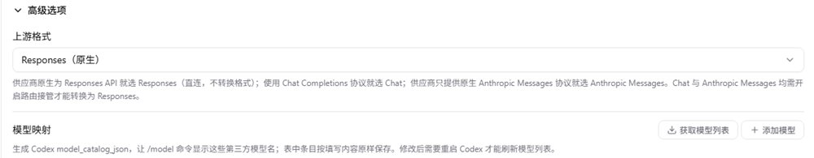
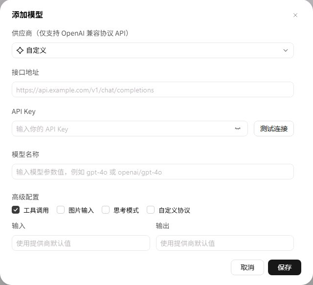
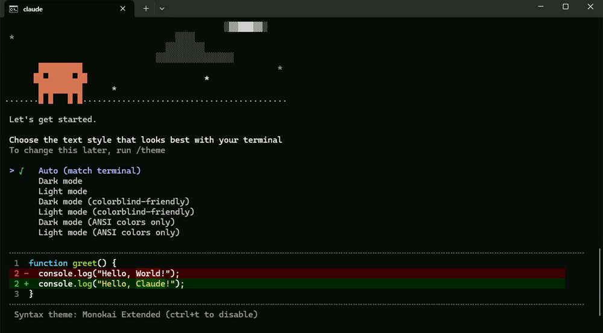

Claude Code / Codex
在 CC Switch 里添加汇码服务商：网页一键导入，或对照参数手动填写。
路线二 · 有技术基础
本页默认你已经装好 Claude Code、Codex 或 WorkBuddy，只讲怎么接入汇码。CC Switch 是图形化的配置管理器，可以保存多个服务商和多把 Key，一键切换。
在 CC Switch 里添加汇码服务商：网页一键导入，或对照参数手动填写。
CC Switch 不管理 WorkBuddy。在 WorkBuddy 自己的设置里添加自定义模型，填三项即可。
改走新手路线，脚本会帮你装好并配置。
第 1 步
.msi 按向导安装。Windows-arm64.msi 或 macOS.dmg。不要下载 .sig 或 Source code。安装后从开始菜单（或“应用程序”）打开一次 CC Switch，让系统登记它的导入链接，再继续下一步。
顶部那排图标用来切换要配置的软件，没有文字说明：第一个橙色星形图标是 Claude（Claude Code），第三个 OpenAI 图标是 Codex。右上角橙色的 + 用来添加供应商。

来源：CC Switch 安装说明。不要在来历不明的“CC Switch 下载站”输入 Key 或付费。
第 2 步
三个客户端的地址各不相同，不要互相照抄。
| 客户端 | 请求地址 | 协议 / 鉴权 |
|---|---|---|
| Claude Code | https://api.tysy.top | Anthropic；ANTHROPIC_AUTH_TOKEN |
| Codex | https://api.tysy.top/v1 | Responses（原生） |
| WorkBuddy | https://api.tysy.top/v1/chat/completions | OpenAI 兼容（Chat Completions），用 OpenAI 风格的 Key；供应商选“自定义” |
模型填 Key 所属分组支持的完整模型 ID。不知道有哪些？在下一步填入 Key 点“读取可用模型”就能看到。
/v1；Codex 不要写成 /v1/v1 或追加 /responses。不要填 /login、/dashboard、/docs/。第 3 步 · 推荐
填好 Key、选好模型，点击导入，CC Switch 会弹出预览，你确认后才会保存。不想用网页导入，可以跳到手动配置。
Claude Code 会按任务调用不同角色的模型。分组里没有的角色，会自动用最接近的可用模型代替，避免调用不存在的模型而报错。
https://api.tysy.top粘贴 Key 后点击“读取可用模型”。
核对应用类型、官网地址、API 端点、各角色模型和 Key 开头几位，再点“导入”。“多模态模型”就是你选的主模型。

把鼠标移到新卡片上，会出现蓝色的“启用”按钮，点它。启用后这张卡片会变成蓝色高亮。然后完全退出并重开客户端。

导入链接只交给本机的 CC Switch，不经过任何服务器。读取模型时页面会用 Key 查询汇码的模型列表，不产生费用。来源：CC Switch 导入实现。
手动配置
在 Claude 面板点右上角橙色 +。顶部保持“Claude 供应商”，预设列表里选第一个“自定义配置”（默认已选中）。下面那些是其他中转商的预设，不要选。

供应商名称填“汇码”，官网链接可填 https://api.tysy.top，API Key 粘贴 Anthropic 风格的完整 Key，请求地址填下面的地址。“完整 URL”开关保持关闭，地址末尾不要加斜杠。
https://api.tysy.top
API 格式保持“Anthropic Messages（原生）”，认证字段保持 ANTHROPIC_AUTH_TOKEN。在“模型映射”的“实际请求模型”一列，给 Sonnet、Opus、Fable、Haiku 分别填分组支持的完整模型 ID；可以先点“获取模型列表”再选。分组没有某个角色时（例如没有 Fable），填一个相近的可用模型。Subagent（子代理）可以留空。

“默认兜底模型”一定要填，填主模型（例如 claude-sonnet-5-5）。不填的话，没有对应到角色的请求会用 Claude 官方模型名发给汇码，分组里没有就会报错。
点右下角“添加”，回到列表后把鼠标移到“汇码”卡片上点“启用”，卡片变成蓝色高亮即可。退出正在运行的 Claude Code，重新打开。
先退出 Claude Code 并备份文件。编辑用户级 ~/.claude/settings.json（Windows 为 %USERPROFILE%\.claude\settings.json），在 env 中设置：
{
"model": "主模型 ID",
"env": {
"ANTHROPIC_BASE_URL": "https://api.tysy.top",
"ANTHROPIC_AUTH_TOKEN": "你的 Key",
"ANTHROPIC_DEFAULT_FABLE_MODEL": "Fable 角色模型 ID",
"ANTHROPIC_DEFAULT_OPUS_MODEL": "Opus 角色模型 ID",
"ANTHROPIC_DEFAULT_SONNET_MODEL": "Sonnet 角色模型 ID",
"ANTHROPIC_DEFAULT_HAIKU_MODEL": "Haiku 角色模型 ID（也用于后台任务）",
"CLAUDE_CODE_SUBAGENT_MODEL": "子代理模型 ID（可选，不填跟随默认）"
}
}主模型写在 model 里，用 /model 切换后会被记住；写成环境变量 ANTHROPIC_MODEL 则每次启动都会强制覆盖。所有 ID 都必须是分组实际支持的模型。不要同时保留 ANTHROPIC_API_KEY。首次启动若要求登录，可在 ~/.claude.json 中设置 "hasCompletedOnboarding": true。不要把真实 Key 写进项目共享的 .claude/settings.json。
手动配置
想保留 ChatGPT 官方登录，先在 设置 → 通用 → Codex 应用增强 中开启“非接管切换时保留官方登录”，并备份现有配置。
点顶部第三个 OpenAI 图标切到 Codex 面板 → 右上角 + → 预设保持第一个“自定义配置”。名称填“汇码”。
API Key 填 OpenAI 风格的完整 Key，API 请求地址填下方地址（“完整 URL”保持关闭）。“默认模型”里预填的 gpt-5.6-sol 要改掉，改成分组支持的模型，例如 gpt-6.1-sol；也可以点输入框右边的下载按钮获取模型列表再选。
https://api.tysy.top/v1
“高级选项”里的上游格式保持默认的“Responses（原生）”，模型映射可以不填。

点“添加”，回到列表把鼠标移到卡片上点“启用”，卡片变成蓝色高亮即可。完全退出并重开 Codex（桌面版和命令行版共用同一份配置）。
通过 CC Switch 配置的 Codex，推理强度默认是“高”，消耗会多一些。日常使用可以在 Codex 输入框右边的模型档位里调低。
先退出 Codex 并备份 ~/.codex。在 config.toml 顶部（任何 [表] 之前）设置模型和服务商，并在末尾添加服务商表：
model_provider = "huima"
model = "分组支持的模型 ID"
[model_providers.huima]
name = "汇码"
base_url = "https://api.tysy.top/v1"
wire_api = "responses"
requires_openai_auth = true再把 ~/.codex/auth.json 写成 {"OPENAI_API_KEY": "你的 Key"}（会替换原有登录，先备份）。
手动配置
WorkBuddy 不通过 CC Switch 配置，在它自己的设置里添加即可。
点左下角头像 →“设置”→“模型”→ 右上角“添加模型”。也可以点输入框右下角的“快速”按钮，在列表最底部点“配置自定义模型”。
供应商保持“自定义”；接口地址填下方完整地址；API Key 粘贴 OpenAI 风格的 Key（和 Codex 同一种，Anthropic 风格的 Key 不能用）；模型名称填分组支持的完整模型 ID，例如 gpt-6.1-sol。填好后点“测试连接”。
https://api.tysy.top/v1/chat/completions
“工具调用”默认已勾选，保持即可。“自定义协议”一定不要勾，勾上后会报错；“图片输入”“思考模式”第一次也先不勾。保存后，点输入框右下角的“快速”按钮，在列表最底部的“自定义模型”里选中它（不要选 Auto）。
第 4 步
claude。第一次打开会先出现两页引导：选文字样式（直接按回车）、安全提示（按回车），然后问是否信任文件夹（按 ↓ 选“Yes, I trust this folder”再回车）。进入后先输入 /status 确认地址是 api.tysy.top，再发测试消息。codex），发测试消息。
收到回复后，到汇码使用记录核对时间、模型和 Key。三者对上才算接通，避免误用仍保留的其他服务商。
日常操作
切换只影响之后的请求。旧 Key 不再使用时，到汇码 API 密钥页面禁用它。
日常操作
/status 或短消息确认。/login 登录。.claude 或 .codex 目录，也不要一键清空系统环境变量。卸载 CC Switch 不会还原客户端配置。旧版脚本直接修改 %USERPROFILE%\.codex\config.toml 和用户环境变量 QIYUAN_API_KEY。改用 CC Switch 前，建议在原电脑、原 Windows 用户下运行旧版回滚脚本。检测到之后有改动时，它会停止，不会覆盖。
只适用于运行过旧版直写配置脚本的电脑。
遇到问题
确认 CC Switch 已安装并至少打开过一次；免安装 ZIP 版可能没有登记导入链接，换用 MSI 安装版或手动配置。
检查汇码卡片是否是蓝色高亮（已启用）、面板是否选对、Key 是否完整。第一次打开时出现的“选文字样式”“安全提示”是正常的引导页，按回车即可，不是登录页。
401 多为 Key 不完整、失效；403 可能是分组无权限；模型不存在时，用上方“读取可用模型”核对完整 ID。
只检查与你以前配置的网关有关的项，保留备份后再改，不要全删。警告详情可能显示 Key，截图时遮住。
不能直接照搬，它们的凭据检查方式不同。参考官方按客户端区分的接入说明。